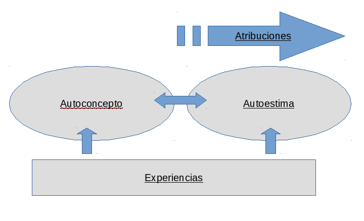
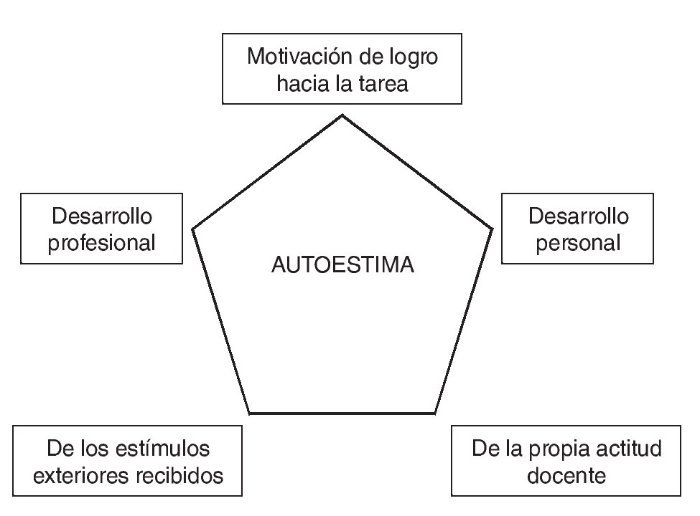
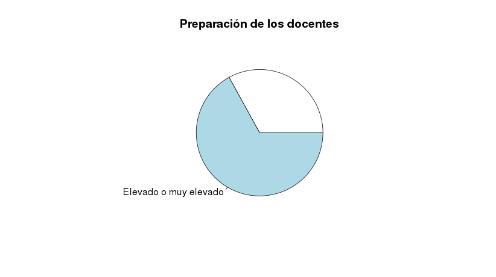
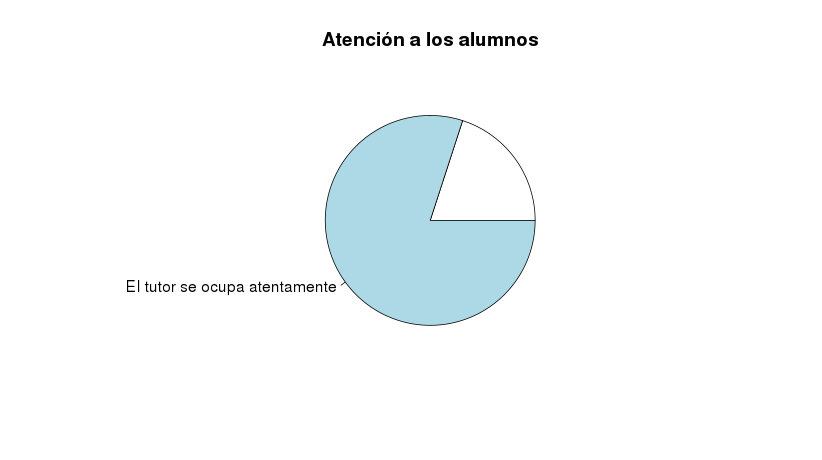
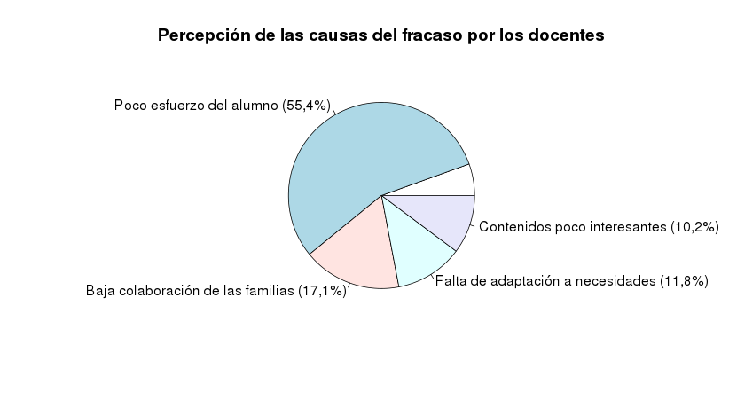
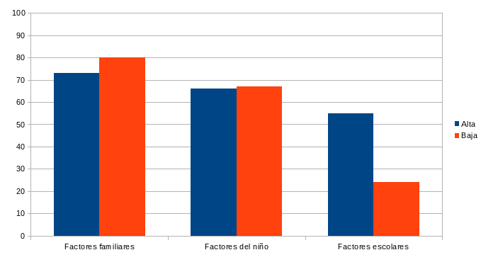
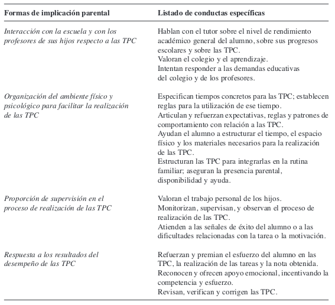

La autoestima obedece a un conjunto de programaciones (mapas) que definen la forma en que el individuo funcionará y procesará sus experiencias. Cada uno percibe su propia realidad de acuerdo con sus mapas conceptuales (Zagalaz, 2006).
EL autoconcepto hace referencia a un contenido más racional y cognitivo. Es la imagen que uno se va haciendo de si mismo a partir de las propias experiencias y, sobre todo, de los mensajes que los otros le van trasmitiendo sobre el mismo y sus comportamientos. De esta manera el autoconcepto constituye el componente cognitivo o intelectual de la visión que nos hacemos nosotros mismos y de nuestras circunstancias (personales, sociales, laborales, etc.).
Vídeo percepción selectiva
Inventario de Autoconcepto en el Medio Escolar (IAME)
Ejercicio: Elaborar cinco preguntas para averiguar si el alumno atribuye el éxito o fracaso escolar a:
Por ejemplo, ¿Qué crees que piensa este profesor de ti?¿Crees que hagas lo que hagas alguien notará tu cambio?, ¿Eres bueno para esta asignatura?, ¿Te crees capacitado de aprobar el curso?.
Rol Play: El alumno que "debe trabajar más". En grupos tres papeles: Alumno, orientador y profesor. Intenta trasmitir o cambiar su mapa mental de que no es capaz de aprobar la asignatura. La única condición es conseguir que se implique sin decir que "estudie más".

La autoestima se configura en la actualidad como un área importante para el desarrollo de la persona tanto en el ámbito personal como profesional (López y Schnitler, 1983).
Voli (1995) presenta una definición de autoestima a la luz del profesorado, y la define como "apreciación de la propia valía e importancia y de la propia toma de responsabilidad hacia sí mismo y hacia sus relaciones intra e interpersonales". En este concepto se evidencian 2 componentes clave: autoapreciación y autorresponsabilidad. De hecho, plantea una premisa, y es que el profesorado necesita reflexionar, aceptar y asumir en la propia dinámica vivencial y profesional los siguientes puntos:
Teniendo en cuenta lo anterior, se podría sostener que la autoestima del profesor está influenciada por el estatus social que posee su profesión en la sociedad. De ahí que su entorno (administración educativa, padres de familia, comunidad en general) es de suma importancia para establecer actitudes favorecedoras en seguridad, identidad, integración, finalidad y competencia hacia sí mismo.
Millar y Troncoso (2005) definen la autoestima profesional docente como el grado de apreciación de la propia valía que el educador tiene con la tarea (pedagógica) para la cual ha sido formado. En tal autoestima, están relacionados factores internos como la identidad, la satisfacción y la conducta profesional, y factores externos como la percepción de los alumnos, pares y comunidad escolar.
Estas consideraciones teóricas y operativas previas permiten reafirmar la enorme importancia que tienen los procesos socioafectivos de los docentes en el espacio educativo, no solo en su desarrollo profesional, sino como elemento clave en los resultados académicos y el desarrollo integral de los alumnos (Millar y Troncoso, 2005:50)
Reasoner (1994) y Zanoco (1996) señalan con fuerza que la clave para desarrollar la autoestima en los niños está en cómo se sienten los profesores con respecto a sí mismos en términos socioafectivo y metacognitivo.
En este mismo sentido, Huici (2000) afirma que el desempeño de un profesor, en el ejercicio de su papel, está íntimamente relacionado con las cogniciones que él tiene de sí mismo como un profesional de la pedagogía. En principio, estas cogniciones conllevan valoraciones que, como ocurre en la autoestima, son determinantes en las formas de pensar, sentir y actuar en el ámbito educacional.
Una autoestima positiva posibilitaría tanto para el ejercicio y desarrollo profesional del docente como para sus alumnos un adecuado contexto emocional que facilitaría una educación de mayor calidad humana.
Esta consideración fue reafirmada por Coopersmith (1967), quien indica que para que los alumnos posean una autoestima positiva, los profesores deben poseerla y exhi birla. De ahí, que las relaciones interpersonales docentes-alumnos son precisamente lo más importante para lograr cambios en la autoestima de sus integrantes. Así, mientras más joven es el estudiante, existe más posibilidad de que el docente influya sobre el alumno. Motivo por el cual el profesor tiene en sus manos elevar o disminuir la autoestima de los educandos (Bonet, 1991:124). En otras palabras, el educador que posee una alta autoestima suele ser más efectivo a la hora de inspirar a sus alumnos una autoestima elevada (Bonet, 1991:123).
En otros términos, el profesor puede proyectar y enseñar autoestima en el aula solo cuando la tenga él mismo suficientemente elevada. De no ser así, lo que proyecta y enseña es una imagen de insuficiencia como persona, y esta es la que los estudiantes perciben e integran como ejemplo de adulto, complementario a la figura de los padres (Voli, 1995).
Cuestionario sobre el desgaste profesional docente MBI-ES
Son numerosos los estudiosos que han tratado de identificar las causas asociadas al fracaso escolar


Pérez-Díaz, Rodríguez y Sánchez (2001)
Relación directa entre rendimiento académico de los hijos y percepción de valía profesional en los docentes, de modo que cuanto mejores son los rendimientos educativos del alumno (aprobados), mejor es la valoración que hacen las familias del profesorado.
El sistema educativo como entidad que recoge las bases y directrices en materia educativa puede contener aspectos que condicionen el fracaso escolar y que habrán de revisarse, tal como apunta Marchesi (2003), en:
El éxito de los centros educativos depende de los rasgos que definan al centro escolar así como el esfuerzo compartido por toda la comunidad educativa.

Instituto IDEA (2001; citado por Del Burgo, 2002)
Parece conveniente analizar también la capacitación y formación profesional del profesorado, su estilo de comunicación e interacción con el alumnado por parte del profesorado y las expectativas que desarrollan hacia sus alumnos y hacia los rendimientos escolares de éstos.
Dentro de este punto, y en relación con el desempeño profesional, Pérez-Díaz, Rodríguez y Sánchez (2001) han observado en un estudio realizado con 2.519 padres, madres o tutores de alumnado de Primaria y ESO, que el 67% de las familias otorga a la preparación de los docentes un nivel muy o bastante elevado, existiendo un 80% de padres y madres que consideran que el tutor se ocupa atentamente de sus alumnos. En este estudio se advierte una relación directa entre rendimiento académico de los hijos y percepción de valía profesional en los docentes, de modo que cuanto mejores son los rendimientos educativos del alumno (menos asignaturas suspensas), mejor es la valoración que las familias hacen del profesorado.

Balzano (2002)
Los de clase social más alta conceden más valor al ambiente escolar y a la competencia de los docentes en relación con el éxito escolar de sus hijos.
En relación al alumnado es importante analizar, entre otros aspectos, los rasgos de personalidad y su nivel de autoestima para ver si atribuye el éxito o el fracaso a la suerte, al profesorado, a la falta de esfuerzo o a la baja capacidad.
Otra investigación desarrollada por Lozano (2003) en cuatro institutos de ESO de Almería (N=1178 alumnos) ha constatado que la variable “entorno académico” influye en el rendimiento del alumnado, de modo que éste se verá afectado por las relaciones con la familia y con los adultos, así como por los vínculos sociales en clase y por la amistad. En este estudio la edad aparece también como variable asociada a cambios afectivo-motivacionales, sucediendo que “a medida que los alumnos se hacen mayores disminuye la puntuación observada en el entorno académico, motivación académica y apoyo social percibido por el alumno” (Lozano, 2003, p.55).
Se plantea, por tanto, la necesidad de que padres y madres y profesorado reflexionen juntos sobre las necesidades de cooperación entre ambos.
Áreas de cooperación entre la familia y el centro escolar:

Conductas de implicación parental por parte de padres eficaces
Suárez et al. 2012
Los de clase social más alta conceden más valor al ambiente escolar y a la competencia de los docentes en relación con el éxito escolar de sus hijos.
España presenta un abandono escolar del 31.9%, más del doble de la media de la Unión Europea (que está en un 14.9%) En estos momentos, únicamente nos superan Portugal (con un 35.4%), Malta (con un 39%), Turquía (46.6%) y Lituania (74%), situándose por debajo del 20% la mayoría de los países, muchos incluso cerca del 10%.
La variable familiar que mayor peso tiene, según la mayoría de las investigaciones, en relación al rendimiento escolar es el clima familiar (Núñez, 2009). La implicación de la familia en el proceso de aprendizaje parece ser decisiva para el desarrollo afectivo, cognitivo y comportamental de los estudiantes y, por tanto, para lograr el éxito académico.
Las Tareas para Casa han sido definidas por Cooper (1989) como “tareas asignadas a los estudiantes por los profesores para ser realizadas en horas extraescolares”. Se ha defendido que la realización de TPC mejora las habilidades de estudio de los alumnos, sus actitudes hacia el trabajo y les enseña que el aprendizaje no sólo se produce dentro de las paredes del colegio (Trautwein, Lüdtke, Schnyder, y Niggli, 2006).
La gran diferencia entre aprender en el colegio y trabajar en las TPC radica en la ausencia física del profesor y en la posibilidad de participación de los padres. Como consecuencia, los alumnos deben aprender a autorregular sus comportamientos, recursos comportamentales y motivacionales y funciones ejecutivas de redirección de conductas.
Si bien hay padres que se esfuerzan por ayudar a sus educandos a crear un ambiente propicio a la realización de las TPC propuestas por los profesores, hay otros que dimiten de tal responsabilidad o desconocen la forma de hacerlo. La dosis adecuada de ayuda y tipo de implicación parental ideal constituyen una de las preocupaciones actuales sobre las TPC (Rosário et al., 2005).
La gran mayoría de los padres se consideran eficaces respecto a la ayuda prestada a sus hijos con las TPC. Por su parte, los estudiantes sienten que cuando los padres los ayudan su rendimiento es mejor; el 95% de los estudiantes rinden mejor en clase cuando reciben ayuda de sus padres con las TPC (Balli, Demo, y Wedman, 1998).
La implicación parental promueve el desarrollo de estrategias cognitivas, afectivas y comportamentales necesarias para conseguir las metas académicas (Zimmerman y Schunk, 2001).
No todos los padres se implican de igual modo en la realización de las TPC de sus hijos. Monitorizar y supervisar las TPC es considerada la forma más común e importante de promocionar la autonomía de los educandos. Por el contrario, otras formas de regulación, denominadas control psicológico, pueden incluso perjudicar el rendimiento académico. La emisión sistemática de mensajes de insatisfacción parental relativos al nivel de esfuerzo alcanzado y al rendimiento conseguido por los hijos, son percibidos (especialmente por los adolescentes) como formas de ‘presión’ y conllevan, frecuentemente, baj implicación en las TPC y frustración (Ghazarian y Buehler, 2010; Okagaki y Luster, 2005).
Parecen existir cambios en la implicación parental desde el comienzo de Primaria hasta Secundaria así como en la motivación parental hacia esa implicación. En los cursos más bajos la implicación parental es efectiva de cara al rendimiento porque los padres tienen más control de las asignaturas (Cooper, 2001) y los estudiantes tienen menos desarrollados los hábitos de estudio y necesitan esa implicación.
Los alumnos de Secundaria generalmente no se benefician de la implicación parental en las TPC debido a que en la adolescencia los jóvenes buscan la mayor independencia posible de sus padres (Gutmam y Midgley, 2000; Hill y Holmbeck, 1986; Patall et al., 2008), lo cual hace necesario que la implicación parental esté más orientada hacia el apoyo y el fomento de la autonomía.
En alumnos de Bachillerato, existe una fuerte correlación positiva entre la implicación parental en las TPC y el rendimiento. La implicación parental es efectiva porque es muy especializada. Los padres se implican en las TPC cuando poseen los conocimientos apropiados para ayudar a sus hijos (Epstein y Lee, 1995; Hoover-Dempsey y Sandler, 1997; Patall et al., 2008).
Su principal característica radica en que combina el aprendizaje cooperativo con la instrucción individualizada: todos los alumnos trabajan sobre lo mismo, pero cada uno de ellos siguiendo un programa específico. Es decir, la tarea de aprendizaje común se estructura en programas individualizados o, mejor dicho, personalizados para cada miembro del equipo, es decir, ajustados a las características y necesidades de cada uno.
En estos equipos los alumnos se responsabilizan de ayudarse unos a otros a alcanzar los objetivos personales de cada miembro del equipo:
Se pretende respetar, con ello, el ritmo y el nivel de aprendizaje de cada alumno sin renunciar a los beneficios del trabajo en grupo. Cooperación e individualización se conjugan en un intento de superar las posibles deficiencias de cada uno de estos enfoques por separado. (Parrilla, 1992, p. 122).
En síntesis, la secuencia a seguir en la aplicación de esta técnica puede ser la siguiente:
Este recurso se sustenta en la colaboración que un alumno dispensa a un compañero de clase que ha formulado una demanda de ayuda. Encontramos una estructura de aprendizaje cooperativa, pero no ya en grupos reducidos y heterogéneos sino recurriendo a una dualidad: parejas de alumnos de un mismo grupo.
Es una estrategia que trata de adaptarse a las diferencias individuales en base a una relación diádica entre los participantes.
Estos suelen ser dos compañeros de la misma clase y edad, uno de los cuales hace el papel de tutor y el otro de alumno. El tutor enseña y el alumno aprende, siendo generalmente esta relación guiada por el profesor. (Parrilla:1992, p. 127)
Para que la Tutoría Entre Iguales ayude a mejorar el rendimiento de los alumnos implicados, tienen que darse las siguientes condiciones (Serrano y Calvo: 1994, p. 24):
Tanto el hecho de recibir respuestas con la solución explicitada, como no recibir ayuda a una demanda, comporta, evidentemente, un efecto negativo sobre el rendimiento.
En síntesis, la secuencia a seguir en la aplicación de esta técnica puede ser la siguiente:
Esta técnica es especialmente útil para las áreas de conocimiento en las que los contenidos son susceptibles de ser “fragmentados” en diferentes partes (por ejemplo: literatura, historia, ciencias experimentales...).
En síntesis esta técnica consiste en los siguientes pasos:
Así pues, todos los alumnos se necesitan unos a otros y se ven "obligados" a cooperar, porque cada uno de ellos dispone sólo de una pieza del rompecabezas y sus compañeros de equipo tienen las otras, imprescindibles para culminar con éxito la tarea propuesta: el dominio global de un tema objeto de estudio previamente fragmentado.
Es una técnica parecida a la anterior, pero más compleja. Tal como la describen Gerardo Echeita y Elena Martín (1990), es muy parecida a la que en nuestro entorno educativo se conoce también con el método de proyectos o trabajo por proyectos.
Esta técnica implica los siguientes pasos:
Cuando el profesor o la profesora realiza una explicación a todo el grupo clase, de vez en cuando hace una pequeña parada de tres minutos para que cada equipo de base piense y reflexione sobre lo que les ha explicado hasta entonces, y piensen tres preguntas, que deberán plantear sobre el tema en cuestión. Una vez transcurridos estos tres minutos cada equipo plantea una pregunta de las tres que ha pensado, una por equipo en cada vuelta. Si una pregunta u otra muy parecida ya han sido planteadas por otro equipo, se la saltan. Cuando ya se han planteado todas las preguntas, el profesor o la profesora prosigue la explicación hasta que haga una nueva parada de tres minutos.
El profesor o la profesora da a cada equipo una hoja con tantas preguntas o ejercicios sobre el tema que trabajan en la clase como miembros tiene el equipo de base (generalmente cuatro). Cada estudiante debe hacerse cargo de una pregunta o ejercicio (debe leerlo en voz alta, asegurarse de que todos sus compañeros aportan información y expresan su opinión y comprobar que todos saben y entienden la respuesta consensuada). Se determina el orden de los ejercicios.
Cuando un estudiante lee en voz alta «su» pregunta o ejercicio y entre todos hablan de como se hace y deciden cual es la respuesta correcta, los lápices de todos se colocan en el centro de la mesa para indicar que en aquellos momentos solo se puede hablar y escuchar y no escribir. Cuando todos tienen claro lo que hay que hacer o responder en aquel ejercicio, cada uno coge su lápiz y escribe o hace en su cuaderno el ejercicio en cuestión.
En ese momento no se puede hablar, solo escribir.
A continuación, se vuelven a poner los lápices en el centro de la mesa y se procede del mismo modo con otra pregunta o cuestión, esta vez dirigida por otro alumno.
El profesor encarga una tarea a los equipos (una lista de palabras, la redacción de una historia, las cosas que saben de un determinado tema para conocer sus ideas iniciales, una frase que resuma una idea fundamental del texto que han leído o del tema que han estudiado, etc.).
Un miembro del equipo empieza a escribir su parte en un folio “giratorio” y lo pasa al que tiene a su lado siguiendo la dirección de las agujas del reloj, para que escriba su parte de la tarea en el folio. Y así sucesivamente hasta que todos los miembros del equipo han participado en la tarea.
Cuando un miembro del equipo escribe su parte, los demás han de estar atentos, ayudarle, corregirle..., puesto que todos son responsables de la producción del equipo (no sólo de su parte...)
Cada alumno puede escribir su parte con un rotulador de un determinado color (el mismo que ha utilizado para escribir en la parte superior del folio su nombre) y así, a simple vista, puede verse la aportación de cada uno.
Ejercicio de activación emocional (positiva)
Ejercicio de activación emocional (negativa)
Ejercicio de activación emocional (evaluación)
Diapositivas de la presentación